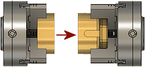

<div id="fturningSecondarySpindleReturn_feedPlaneHeight_group"><p>チャック リターン送り平面</p>
<table class="tipTable" cellspacing="10">
<tr>
<td><center></center></td>
</tr><tr>
<td><center><p><b>チャック リターン送り平面</b></p></center></td>
</tr></table>
<p>サブスピンドルは、ホームに退避する前にこの Z 軸の位置に送ります。</p>
</div>